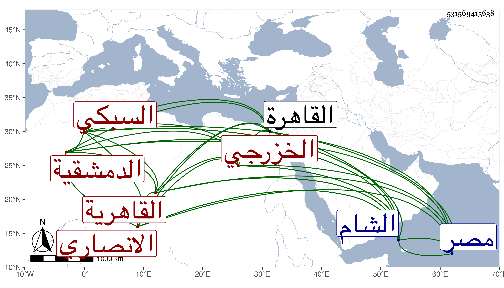

0902Sakhawi.DawLamic.ITO20230111-ara1.EIS1600.531569415638
Biography ID: 531569415638
58
باي خاتون ابنة علي بن محمد بن عبد البر بن يحيى بن علي بن تمام بن يوسف ابن موسى بن تمام بن حامد بن يحيى بن عمر بن عثمان بن علي بن نشوان بن سوار بن سليم أم عبد الرحمن ابنة العلاء أبي الحسن بن البهاء أبي البقاء الانصاري الخزرجي السبكي الاصل الدمشقية ثم القاهرية الماضي أبوها . ولدت في حدود سنة خمس وسبعين وسبعمائة ظنا واسمعت على التقي أبي بكر بن محمد بن عبد الرحمن المزي والكمال بن النحاس والشهاب أحمد بن عبد الغالب الماكسيني وعائشة ابنة أبي بكر بن قواليح وجماعة ، وأجاز لها أبو العباس بن العز وناصر الدين بن داود ابن حمزة وآخرون ، وحدثت بالشام ومصر ، وكان مسكنها في الشام بقرب دار الطعم ثم نقلها الظاهر جقمق إلى القاهرة لاعتنائه بها وسكنت بحكر المرسينة من قناطر السباع ؛ وكانت خيرة من بيت علم ورياسة وحشمة محبة في الحديث وأهله لا تمل من الاسماع مع اكرامهم واحترامهم حملت عنها الكثير ، وماتت في جمادى الثانية سنة أربع وستين بعد مرض طويل بحيث قيل أنها اختلطت ولم يتحرر لي ذلك رحمها الله وإيانا .
